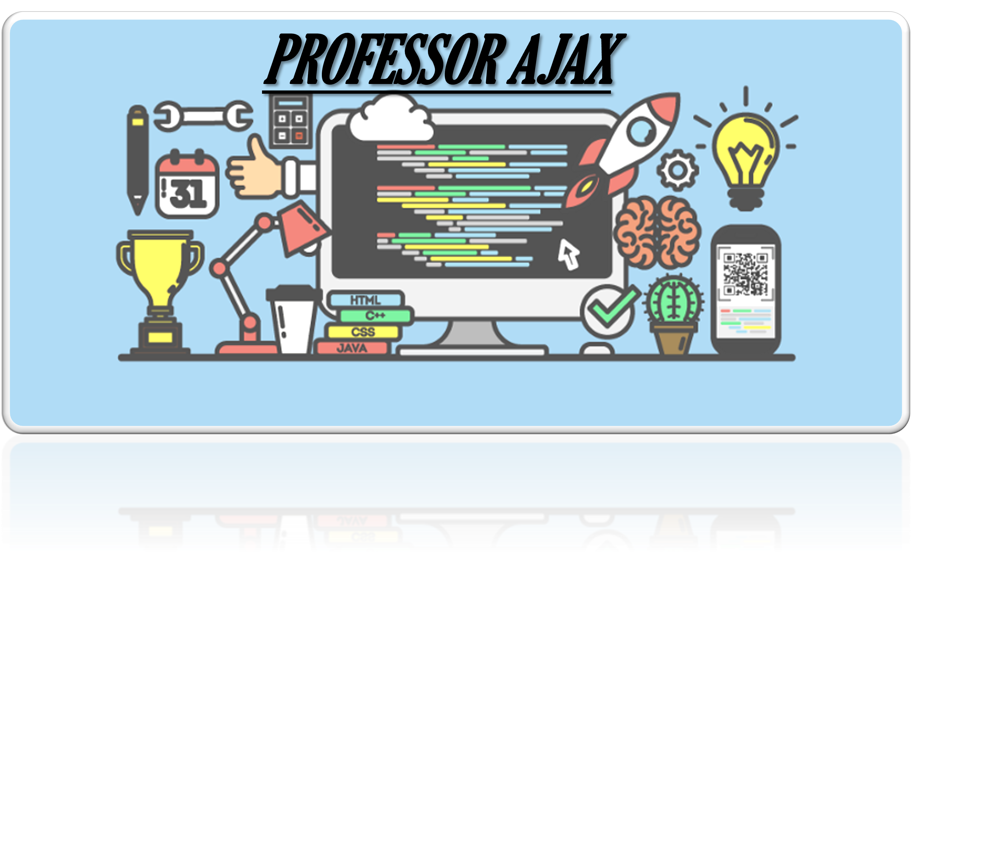
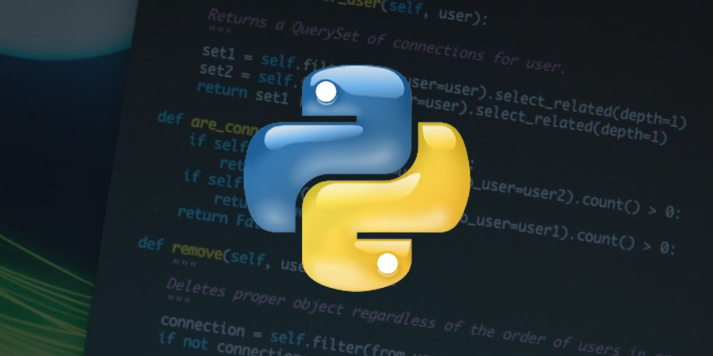

PrincipalMusicaAulasContato


Python é uma linguagem de programação multiplataforma que permite desenvolver aplicações para games, desktops, web e dispositivos móveis. Além disso, ela pode se comunicar com outras aplicações que foram desenvolvidas em outras linguagens como C, C++, Java e C#. Java é uma linguagem de programação e plataforma computacional lançada pela primeira vez pela Sun Microsystems em 1995. Existem muitas aplicações e sites que não funcionarão, a menos que você tenha o Java instalado, e mais desses são criados todos os dias. C# (CSharp) é uma linguagem de programação orientada a objetos criada pela Microsoft, faz parte da sua plataforma . Net. A companhia baseou C# na linguagem C++ e Java. a linguagem de programação R auxilia na coleta, tratamento e transformação desses dados. Além disso, ela é responsável por ajudar na implementação de algoritmos para realizar análise estatísticas, modelos de inferência, regressão e visualização de dados.